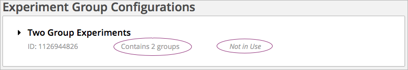
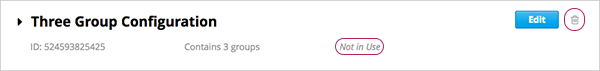

7.2. Configure Your Course for Content Experiments¶
This chapter describes how to configure your course so that you can use content experiments. See:
- Enable Content Experiments
- Overview of Group Configurations
- Set up Group Configurations in edX Studio
- Guidelines for Modifying Group Configurations
- Set Up Group Configuration for OLX Courses
7.2.1. Enable Content Experiments¶
To enable content experiments in your course, you add split_test to the
Advanced Modules List in Advanced Settings.
Note
split_test is the internal edX Platform name for a content experiment.
From the Settings menu, select Advanced Settings.
On the Advanced Settings page, locate Advanced Modules List.
In the Advanced Modules List field, add
"split_test". Be sure that you include the double quotation marks.If you have multiple values, ensure that they are separated by commas (
,).For example, the text in the Advanced Modules List field may resemble the following:
[ "lti", "word_cloud", "split_test" ]
At the bottom of the page, click Save Changes.
7.2.2. Overview of Group Configurations¶
Before you can create content experiments, you must specify at least one group configuration for your course.
A group configuration defines how many groups of students are in an experiment. You can have any number of group configurations in your course. When you create a content experiment, you select the group configuration to use.
For example, you may want to do two different experiments at different times during your course. In one content experiment, students either see a video or complete a reading assignment. You can then include problems so that you can see which group learned the material more completely. For this content experiment, you need a group configuration that assigns your students to two experiment groups.
In the other content experiment, you can present the same question using four different types of problems. For this content experiment, you need a group configuration that assigns your students to four experiment groups.
7.2.2.1. Assigning Students to Experiment Groups¶
The edX Platform assigns students to each experiment group in a group configuration.
Experiment group assignments are:
Dynamic
The edX Platform assigns a student to an experiment group the first time he or she views a content experiment that uses the group configuration.
Random
You cannot control which students are assigned to which experiment group.
Evenly distributed
The edX Platform keeps track of the size of experiment groups, and assigns new students to groups evenly. For example, if you have two experiment groups in a configuration, each group includes 50% of the students in the course; if you have four experiment groups, each group includes 25% of the students.
Permanent
Students remain in their assigned experiment groups regardless of how many content experiments you set up that use the same group configuration.
7.2.3. Set up Group Configurations in edX Studio¶
Note
You must enable content experiments before you can set up group configurations.
To set up group configurations, on the Settings menu, select Group Configurations. The Group Configurations page opens.
From this page you can create, edit, and delete group configurations. You can also view experiments that use a group configuration.
7.2.3.1. Create a Group Configuration¶
You can create a group configuration at any time.
- On the Group Configurations page, under Experiment Groups, click New Experiment Group. The following page opens:

2. Enter a name in the Group Configuration Name field. Use a meaningful name, because you will select from group configuration names when you create content experiments. Students do not see the group configuration name.
- Optionally, enter a description for the new group configuration.
- By default, a new configuration already contains two groups. Modify the groups or add and delete groups as needed. A group configuration must have at least one group.
- Modify group names as needed. You see group names in the unit page in Studio, but group names are not visible to students.
- Click Add another group to include another group as part of the configuration.
- Click the X to the right of an existing group to remove it from the configuration. A group configuration must have at least one group.
- Click Create to save the new group configuration.
The group configuration is then listed in the page. You can see the number of groups that the configuration contains, as well as whether the configuration is in use in the course:
{kind=link}
7.2.3.2. Edit a Group Configuration¶
Important
You can change the name of a group configuration at any time. However, before you modify any other characteristics of a group configuration that is currently used in a running course, review Guidelines for Modifying Group Configurations.
On the Group Configurations page, hover over the group configuration and click Edit.

The following page opens:

Modify the name and description as needed.
Modify groups in the configuration as needed. See Create a Group Configuration for details.
Click Save to save your changes.
7.2.3.3. Delete a Group Configuration¶
Note
You can only delete a group configuration that is not currently used in a content experiment. You cannot delete a group configuration that is used in a content experiment.
- On the Group Configurations page, hover over the group configuration and click the Delete icon.

- When prompted to confirm the deletion, click Delete.
7.2.3.4. View Experiments that Use a Group Configuration¶
You can view the experiments that use each of your group configurations.
On the Group Configurations page, click the name of a group to see its details. You see links to experiments that use the group configuration:

Click a link to go to the unit page that contains the experiment.
7.2.3.5. View a Group Configuration from an Experiment¶
When working with a content experiment, you can view details about the group configuration used by that experiment in two ways:
- In a unit that contains a content experiment, in the content experiment block, click the name of the group configuration.

- At the top of the content experiment page, click the name of the group configuration.

In both cases, the group configuration opens:
You can use the link in the group configuration to return to the unit that contains the content experiment.
7.2.4. Guidelines for Modifying Group Configurations¶
Review these guidelines if you must modify a group configuration after a course starts. These guidelines apply for courses built in Studio or OLX.
7.2.4.1. Modifying a Group Configuration¶
After the course starts, do not:
- Delete group configurations.
- Change the
idvalue of a group configuration.
7.2.4.2. Modifying Experiment Groups¶
After the course starts, do not change the id value of an experiment
group.
You can change experiment group names at any time.
7.2.4.3. Removing Experiment Groups from Group Configurations¶
After a course in which you are running a content experiment has started, students in a specific experiment group might have difficulties with the content or with the course experience. In this situation, you can remove the experiment group from the group configuration. Content that was specified for that experiment group is then no longer visible to students.
Students in the removed experiment group are reassigned evenly to one of the other experiment groups in the group configuration. Any problems that these students completed in the removed experiment group content do not count toward their grades. The students must begin the problem set again and complete all the problems in the experiment group content to which they are reassigned.
Removing an experiment group affects event data for the course. Ensure that researchers who are evaluating your course results are aware of the experiment group that you removed and the date on which you removed it.
7.2.5. Set Up Group Configuration for OLX Courses¶
You define group configurations in the policy.json file in the policies
directory of an OLX course.
To specify group configurations, you modify the value for the
user_partitions policy key.
Note
user_partitions is the internal edX Platform name for group
configurations.
The value for user_partitions is a JSON collection of group configurations,
each of which defines the experiment groups of students.
Note
Use names for group configurations that are meaningful. You select from the list of group configuration names when you add a content experiment.
See the following examples for more information.
7.2.5.1. Example: One Group Configuration¶
The following code shows an example JSON object that defines a group configuration with two student segments.
"user_partitions": [{"id": 0,
"name": "Name of the group configuration",
"description": "Description of the group configuration.",
"version": 1,
"groups": [{"id": 0,
"name": "Group 1",
"version": 1},
{"id": 1,
"name": "Group 2",
"version": 1}]
}
]
In this example:
- The
"id": 0identifies the group configuration. For XML courses, the value is referenced in theuser_partitionattribute of the<split_test>element in the content experiment file. - The
groupsarray identifies the experiment groups to which students are randomly assigned. For XML courses, each groupidvalue is referenced in thegroup_id_to_childattribute of the<split_test>element.
7.2.5.2. Example: Multiple Group Configurations¶
The following code shows an example JSON object that defines two group configurations. The first group configuration divides students into two experiment groups, and the second divides students into three experiment groups.
"user_partitions": [{"id": 0,
"name": "Name of Group Configuration 1",
"description": "Description of Group Configuration 1.",
"version": 1,
"groups": [{"id": 0,
"name": "Group 1",
"version": 1},
{"id": 1,
"name": "Group 2",
"version": 1}]}
{"id": 1,
"name": "Name of Group Configuration 2",
"description": "Description of Group Configuration 2.",
"version": 1,
"groups": [{"id": 0,
"name": "Group 1",
"version": 1},
{"id": 1,
"name": "Group 2",
"version": 1}
{"id": 2,
"name": "Group 3",
"version": 1}
]}
]
Note
As this example shows, each group configuration is independent. Group IDs and names must be unique within a group configuration, but not across all group configurations in your course.